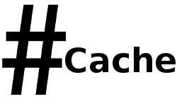
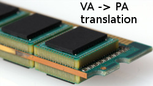
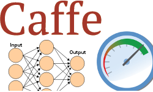
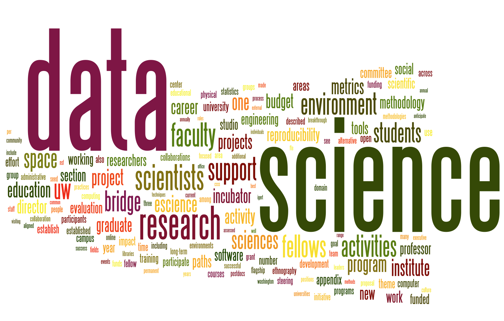

Publications

Thesis Co-designing Reliability and Performance for Datacenter Memory - pdf, slides
PhD, School of Informatics, University of Edinburgh
Paper Āpta: Fault-tolerant object-granular CXL disaggregated memory for accelerating FaaS
Adarsh Patil, Vijay Nagarajan, Nikos Nikoleris, Nicolai Oswald
International Conference on Dependable Systems and Networks (DSN), June 2023 (accept rate: 47/235 ≈ 20%)
Paper Dvé: Improving DRAM Reliability and Performance On-Demand via Coherent Replication
Adarsh Patil, Vijay Nagarajan, Rajeev Balasubramonian, Nicolai Oswald
International Symposium on Computer Architecture (ISCA), June 2021 (accept rate: 76/406 ≈ 18%)
pdf, slides, talk, poster, code
Talk Improving Reliability and Performance of Datacenter Systems via Coherence - slides, talk
Adarsh Patil
ARM / UEd Autumn 2021 Conference, October 2021
Talk FaaS with Disaggregated Shared Memory - slides
Adarsh Patil
UK System Research Workshop 2021, December 2021
Thesis Heterogeneity Aware Shared DRAM Cache for Integrated Heterogeneous Systems - pdf, slides
Master of Science (Engineering), Department of CSA, IISc
Paper HAShCache: Heterogeneity-Aware Shared DRAMCache for Integrated Heterogeneous Systems
Adarsh Patil, R Govindarajan
ACM Trans. Arch. and Code Optim. (TACO), Volume 14, Issue 4 - December 2017 (accept rate: ≈ 30%)
IISc EECS Research Students Symposium, April 2017, [Best Poster Award]
pdf, slides, poster, code
Report TLB and Pagewalk Performance in Multicore Architectures with Large Die-Stacked DRAM Cache - pdf, slides
Adarsh Patil, R Govindarajan
CSA Perspective Seminar 2015, arXiv
Report Spoken Language Identification Using Machine Learning - pdf, slides
Adarsh Patil, Harsha K C, Akshay Joshi, Pramod N, Srinivasa K G
Bachelor of Engg (B.E.) Project [Best Project Award]
Paper SNIDS: An Intelligent Multiclass Support Vector Machines Based NIDS - pdf
Srinivasa K G, Adarsh Patil, Harsha K C, Akshay Joshi and Pramod N
ICECIT 2012, DRDO Funded Project
Projects

Dvé: Memory Replication for Reliability and Performance
Research Paper (DSN '23)view →
-
Improving Reliability and Performance of Datacenter Systems via Coherence
Research Talkview →

Dvé: Memory Replication for Reliability and Performance
Research Paper (ISCA '21)view →
- 
HAShCache: Heterogeneity Aware Shared DRAMCache for IHS
Research Paper (TACO'17)view →
- 
TLB & pagewalk performance in multicore w/ stacked DRAM
Research Report (arXiv)view →
- 
Optimizing Caffe
(DNN Framework) for multicore / SIMD processorsCompiler Optim. Projectview →
-
Optimizing Image/Video processing algo's for multicore / SIMD processors
Compiler Optim. Projectview →
-
Branch Prediction in Android
Comp. architecure Projectview →
-
Dynamic Scoping for Clang Compiler
Compiler Projectview →
-
Identifying Error-prone Predicates of SQL Quries
Database Projectview →

µ-Architecture of Scale-out applications
Comp. architecure Projectview →
- 
Data Science Specialization - Coursera
MOOC: John Hopinks Univview →

Spoken Language Detection
ML Projectview →

Line Birds
OpenGL Projectview →
-
Intelligent Network Intrusion Detection System
ML projectview →
Professional Service
- • HPCA 2024 - Web co-chair
- • IEEE CAL 2021 - Reviewer
Resume